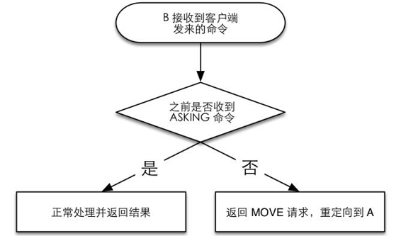

8.3 集群
即使使用哨兵，此时的 Redis 集群的每个数据库依然存有集群中的所有数据，从而导致集群的总数据存储量受限于可用存储内存最小的数据库节点，形成木桶效应。由于Redis中的所有数据都是基于内存存储，这一问题就尤为突出了，尤其是当使用 Redis 做持久化存储服务使用时。
对 Redis 进行水平扩容，在旧版 Redis 中通常使用客户端分片来解决这个问题，即启动多个 Redis 数据库节点，由客户端决定每个键交由哪个数据库节点存储，下次客户端读取该键时直接到该节点读取。这样可以实现将整个数据分布存储在N个数据库节点中，每个节点只存放总数据量的 1/N。但对于需要扩容的场景来说，在客户端分片后，如果想增加更多的节点，就需要对数据进行手工迁移，同时在迁移的过程中为了保证数据的一致性，还需要将集群暂时下线，相对比较复杂。
考虑到Redis实例非常轻量的特点，可以采用预分片技术（presharding）来在一定程度上避免此问题，具体来说是在节点部署初期，就提前考虑日后的存储规模，建立足够多的实例（如128个节点），初期时数据很少，所以每个节点存储的数据也非常少，但由于节点轻量的特性，数据之外的内存开销并不大，这使得只需要很少的服务器即可运行这些实例。日后存储规模扩大后，所要做的不过是将某些实例迁移到其他服务器上，而不需要对所有数据进行重新分片并进行集群下线和数据迁移了。
无论如何，客户端分片终归是有非常多的缺点，比如维护成本高，增加、移除节点较繁琐等。Redis 3.0版的一大特性就是支持集群（Cluster，注意与本章标题——广义的“集群”相区别）功能。集群的特点在于拥有和单机实例同样的性能，同时在网络分区后能够提供一定的可访问性以及对主数据库故障恢复的支持。另外集群支持几乎所有的单机实例支持的命令，对于涉及多键的命令（如MGET），如果每个键都位于同一个节点中，则可以正常支持，否则会提示错误。除此之外集群还有一个限制是只能使用默认的0号数据库，如果执行SELECT切换数据库则会提示错误。
哨兵与集群是两个独立的功能，但从特性来看哨兵可以视为集群的子集，当不需要数据分片或者已经在客户端进行分片的场景下哨兵就足够使用了，但如果需要进行水平扩容，则集群是一个非常好的选择。
使用集群，只需要将每个数据库节点的cluster-enabled配置选项打开即可。每个集群中至少需要3个主数据库才能正常运行。
为了演示集群的应用场景以及故障恢复等操作，这里以配置一个3主3从的集群系统为例。首先建立启动 6 个 Redis 实例，需要注意的是配置文件中应该打开 cluster-enabled。一个示例配置为：
port 6380
cluster-enabled yes
其中port参数修改成实际的端口即可。这里假设6个实例的端口分别是6380、6381、6382、6383、6384和6385。集群会将当前节点记录的集群状态持久化地存储在指定文件中，这个文件默认为当前工作目录下的nodes.conf文件。每个节点对应的文件必须不同，否则会造成启动失败，所以启动节点时要注意最后为每个节点使用不同的工作目录，或者通过cluster-config-file选项修改持久化文件的名称：
cluster-config-file nodes.conf
启动后的效果如图8-5所示。
图8-5 节点启动后的输出内容
每个节点启动后都会输出类似下面的内容：
No cluster configuration found, I'm c21d9182eec935720f1622…
其中c21d9182eec935720f1622…表示该节点的运行ID，运行ID是节点在集群中的唯一标识；同一个运行ID，可能地址和端口是不同的。
启动后，可以使用Redis命令行客户端连接任意一个节点使用 INFO 命令来判断集群是否正常启用了：
redis> INFO cluster
# Cluster
cluster_enabled:1
其中cluster_enabled为1表示集群正常启用了。现在每个节点都是完全独立的，要将它们加入同一个集群里还需要几个步骤。
Redis源代码中提供了一个辅助工具redis-trib.rb可以非常方便地完成这一任务。因为redis-trib.rb是用Ruby语言编写的，所以运行前需要在服务器上安装Ruby程序，具体安装方法请参阅相关文档。redis-trib.rb 依赖于 gem 包 redis，可以执行 gem install redis来安装。
使用redis-trib.rb来初始化集群，只需要执行：
$ /path/to/redis-trib.rb create --replicas 1 127.0.0.1:6380 127.0.0.1:6381
127.0.0.1:6382 127.0.0.1:6383 127.0.0.1:6384 127.0.0.1:6385
其中 create参数表示要初始化集群，--replicas 1表示每个主数据库拥有的从数据库个数为1，所以整个集群共有3（6/2）个主数据库以及3个从数据库。
执行完后，redis-trib.rb会输出如下内容：
>>> Creating cluster
Connecting to node 127.0.0.1:6380: OK
Connecting to node 127.0.0.1:6381: OK
Connecting to node 127.0.0.1:6382: OK
Connecting to node 127.0.0.1:6383: OK
Connecting to node 127.0.0.1:6384: OK
Connecting to node 127.0.0.1:6385: OK
>>> Performing hash slots allocation on 6 nodes...
Using 3 masters:
127.0.0.1:6380
127.0.0.1:6381
127.0.0.1:6382
Adding replica 127.0.0.1:6383 to 127.0.0.1:6380
Adding replica 127.0.0.1:6384 to 127.0.0.1:6381
Adding replica 127.0.0.1:6385 to 127.0.0.1:6382
M: d4f906940d68714db787a60837f57fa496de5d12 127.0.0.1:6380 slots:0-5460 (5461 slots) master
M: b547d05c9d0e188993befec4ae5ccb430343fb4b 127.0.0.1:6381 slots:5461-10922 (5462 slots) master
M: 887fe91bf218f203194403807e0aee941e985286 127.0.0.1:6382 slots:10923-16383 (5461 slots) master
S: e0f6559be7a121498fae80d44bf18027619d9995 127.0.0.1:6383 replicates d4f906940d68714db787a60837f57fa496de5d12
S: a61dbf654c9d9a4d45efd425350ebf720a6660fc 127.0.0.1:6384 replicates b547d05c9d0e188993befec4ae5ccb430343fb4b
S: 551e5094789035affc489db267c8519c3a29f35d 127.0.0.1:6385 replicates 887fe91bf218f203194403807e0aee941e985286
Can I set the above configuration? (type 'yes' to accept):
内容包括集群具体的分配方案，如果觉得没问题则输入yes来开始创建。下面根据上面的输出详细介绍集群创建的过程。
首先redis-trib.rb会以客户端的形式尝试连接所有的节点，并发送PING命令以确定节点能够正常服务。如果有任何节点无法连接，则创建失败。同时发送 INFO 命令获取每个节点的运行ID以及是否开启了集群功能（即cluster_enabled为1）。
准备就绪后集群会向每个节点发送 CLUSTER MEET命令，格式为 CLUSTER MEET ip port，这个命令用来告诉当前节点指定ip和port上在运行的节点也是集群的一部分，从而使得6个节点最终可以归入一个集群。这一过程会在8.3.2节具体介绍。
然后redis-trib.rb会分配主从数据库节点，分配的原则是尽量保证每个主数据库运行在不同的IP地址上，同时每个从数据库和主数据库均不运行在同一IP地址上，以保证系统的容灾能力。分配结果如下：
Using 3 masters:
127.0.0.1:6380
127.0.0.1:6381
127.0.0.1:6382
Adding replica 127.0.0.1:6383 to 127.0.0.1:6380
Adding replica 127.0.0.1:6384 to 127.0.0.1:6381
Adding replica 127.0.0.1:6385 to 127.0.0.1:6382
其中主数据库是 6380、6381 和 6382 端口上的节点（以下使用端口号来指代节点），6383是6380的从数据库，6384是6381的从数据库，6385是6382的从数据库。
分配完成后，会为每个主数据库分配插槽，分配插槽的过程其实就是分配哪些键归哪些节点负责，这部分会在8.3.3节介绍。之后对每个要成为子数据库的节点发送 CLUSTER REPLICATE主数据库的运行 ID来将当前节点转换成从数据库并复制指定运行 ID 的节点（主数据库）。
此时整个集群的过程即创建完成，使用 Redis 命令行客户端连接任意一个节点执行CLUSTER NODES可以获得集群中的所有节点信息，如在6380执行：
redis 6380> CLUSTER NODES
551e5094789035affc489db267c8519c3a29f35d 127.0.0.1:6385 slave
887fe91bf218f203194403807e0aee941e985286 0 1424677377448 6 connected
e0f6559be7a121498fae80d44bf18027619d9995 127.0.0.1:6383 slave
d4f906940d68714db787a60837f57fa496de5d12 0 1424677381593 4 connected
b547d05c9d0e188993befec4ae5ccb430343fb4b 127.0.0.1:6381 master - 0 1424677379515 2 connected 5461-10922
d4f906940d68714db787a60837f57fa496de5d12 127.0.0.1:6380 myself,master - 0 0 1
connected 0-5460
a61dbf654c9d9a4d45efd425350ebf720a6660fc 127.0.0.1:6384 slave
b547d05c9d0e188993befec4ae5ccb430343fb4b 0 1424677378481 5 connected
887fe91bf218f203194403807e0aee941e985286 127.0.0.1:6382 master - 0 1424677380554 3 connected 10923-16383
从上面的输出中可以看到所有节点的运行ID、地址和端口、角色、状态以及负责的插槽等信息，后文会进行解读。
redis-trib.rb是一个非常好用的辅助工具，其本质是通过执行Redis命令来实现集群管理的任务。读者如果有兴趣可以尝试不借助redis-trib.rb，手动建立一次集群。
前面介绍过 redis-trib.rb 是使用 CLUSTER MEET 命令来使每个节点认识集群中的其他节点的，可想而知如果想要向集群中加入新的节点，也需要使用 CLUSTER MEET命令实现。加入新节点非常简单，只需要向新节点（以下记作A）发送如下命令即可：
CLUSTER MEET ip port
ip和port是集群中任意一个节点的地址和端口号，A接收到客户端发来的命令后，会与该地址和端口号的节点B进行握手，使B将A认作当前集群中的一员。当B与A握手成功后，B会使用Gossip协议[3] 将节点A的信息通知给集群中的每一个节点。通过这一方式，即使集群中有多个节点，也只需要选择 MEET 其中任意一个节点，即可使新节点最终加入整个集群中。
新的节点加入集群后有两种选择，要么使用 CLUSTER REPLICATE命令复制每个主数据库来以从数据库的形式运行，要么向集群申请分配插槽（slot）来以主数据库的形式运行。
在一个集群中，所有的键会被分配给16384个插槽，而每个主数据库会负责处理其中的一部分插槽。现在再回过头来看8.3.1节创建集群时的输出：
M: d4f906940d68714db787a60837f57fa496de5d12 127.0.0.1:6380 slots:0-5460 (5461 slots) master
M: b547d05c9d0e188993befec4ae5ccb430343fb4b 127.0.0.1:6381 slots:5461-10922 (5462 slots) master
M: 887fe91bf218f203194403807e0aee941e985286 127.0.0.1:6382 slots:10923-16383 (5461 slots) master
上面的每一行表示一个主数据库的信息，其中可以看到6380负责处理0～5460这5461个插槽，6381负责处理5461～10922这5462个插槽，6382则负责处理10923～16383这5461个插槽。虽然redis-trib.rb初始化集群时分配给每个节点的插槽都是连续的，但是实际上Redis并没有此限制，可以将任意的几个插槽分配给任意的节点负责。
在介绍如何将插槽分配给指定的节点前，先来介绍键与插槽的对应关系。Redis 将每个键的键名的有效部分使用CRC16算法计算出散列值，然后取对16384的余数。这样使得每个键都可以分配到16384个插槽中，进而分配的指定的一个节点中处理。CRC16的具体实现参见附录C。这里键名的有效部分是指：
（1）如果键名包含{符号，且在{符号后面存在}符号，并且{和}之间有至少一个字符，则有效部分是指{和}之间的内容；
（2）如果不满足上一条规则，那么整个键名为有效部分。
例如，键hello.world的有效部分为"hello.world"，键{user102}:last.name的有效部分为"user102"。如本节引言所说，如果命令涉及多个键（如MGET），只有当所有键都位于同一个节点时 Redis 才能正常支持。利用键的分配规则，可以将所有相关的键的有效部分设置成同样的值使得相关键都能分配到同一个节点以支持多键操作。比如，{user102}:first.name 和{user102}:last.name 会被分配到同一个节点，所以可以使用 MGET {user102}:first.name {user102}:last.name来同时获取两个键的值。
介绍完键与插槽的对应关系后，接下来再来介绍如何将插槽分配给指定节点。插槽的分配分为如下几种情况。
（1）插槽之前没有被分配过，现在想分配给指定节点。
（2）插槽之前被分配过，现在想移动到指定节点。
其中第一种情况使用 CLUSTER ADD SLOT S命令来实现，redis-trib.rb 也是通过该命令在创建集群时为新节点分配插槽的。CLUSTER ADDSLOTS命令的用法为：
CLUSTER ADDSLOTS slot1 [slot2] ... [slotN]
如想将 100 和 101 两个插槽分配给某个节点，只需要在该节点执行：CLUSTER ADDSLOTS 100 101即可。如果指定插槽已经分配过了，则会提示：
(error) ERR Slot 100 is already busy
可以通过命令 CLUSTER SLOTS来查看插槽的分配情况，如：
redis 6380> CLUSTER SLOTS
1) 1) (integer) 5461
2) (integer) 10922
3) 1) "127.0.0.1"
2) (integer) 6381
4) 1) "127.0.0.1"
2) (integer) 6384
2) 1) (integer) 0
2) (integer) 5460
3) 1) "127.0.0.1"
2) (integer) 6380
4) 1) "127.0.0.1"
2) (integer) 6383
3) 1) (integer) 10923
2) (integer) 16383
3) 1) "127.0.0.1"
2) (integer) 6382
4) 1) "127.0.0.1"
2) (integer) 6385
其中返回结果的格式很容易理解，一共3条记录，每条记录的前两个值表示插槽的开始号码和结束号码，后面的值则为负责该插槽的节点，包括主数据库和所有的从数据库，主数据库始终在第一位。
对于情况2，处理起来就相对复杂一些，不过redis-trib.rb提供了比较方便的方式来对插槽进行迁移。我们首先使用redis-trib.rb将一个插槽从6380迁移到6381，然后再介绍如何不使用redis-trib.rb来完成迁移。
首先执行如下命令：
$ /path/to/redis-trib.rb reshard 127.0.0.1:6380
其中reshard表示告诉redis-trib.rb要重新分片，127.0.0.1:6380是集群中的任意一个节点的地址和端口，redis-trib.rb会自动获取集群信息。接下来，redis-trib.rb将会询问具体如何进行重新分片，首先会询问想要迁移多少个插槽：
How many slots do you want to move (from 1 to 16384)?
我们只需要迁移一个，所以输入1后回车。接下来redis-trib.rb会询问要把插槽迁移到哪个节点：
What is the receiving node ID?
可以通过 CLUSTER NODES命令获取6381的运行ID，这里是 b547d05c9d0e188993befec 4ae5ccb430343fb4b，输入并回车。接着最后一步是询问从哪个节点移出插槽：
Please enter all the source node IDs.
Type 'all' to use all the nodes as source nodes for the hash slots.
Type 'done' once you entered all the source nodes IDs.
Source node #1:all
我们输入6380对应的运行ID按回车然后输入done再按回车确认即可。
接下来输入 yes来确认重新分片方案，重新分片即告成功。使用 CLUSTER SLOTS命令获取当前插槽的分配情况如下：
redis 6380> CLUSTER SLOTS
1) 1) (integer) 1
2) (integer) 5460
3) 1) "127.0.0.1"
2) (integer) 6380
4) 1) "127.0.0.1"
2) (integer) 6383
2) 1) (integer) 10923
2) (integer) 16383
3) 1) "127.0.0.1"
2) (integer) 6382
4) 1) "127.0.0.1"
2) (integer) 6385
3) 1) (integer) 0
2) (integer) 0
3) 1) "127.0.0.1"
2) (integer) 6381
4) 1) "127.0.0.1"
2) (integer) 6384
4) 1) (integer) 5461
2) (integer) 10922
3) 1) "127.0.0.1"
2) (integer) 6381
4) 1) "127.0.0.1"
2) (integer) 6384
可以看到现在比之前多了一条记录，第0号插槽已经由6381负责，此时重新分片成功。
那么redis-trib.rb实现重新分片的原理是什么，我们如何不借助redis-trib.rb手工进行重新分片呢？使用如下命令即可：
CLUSTER SETSLOT 插槽号 NODE 新节点的运行 ID
如想要把0号插槽迁移回6380：
redis 6381> CLUSTER SETSLOT 0 NODE d4f906940d68714db787a60837f57fa496de5d12
OK
此时重新使用 CLUSTER SLOTS 查看插槽的分配情况，可以看到已经恢复如初了。然而这样迁移插槽的前提是插槽中并没有任何键，因为使用 CLUSTER SETSLOT命令迁移插槽时并不会连同相应的键一起迁移，这就造成了客户端在指定节点无法找到未迁移的键，造成这些键对客户端来说“丢失了”（8.3.4节会介绍客户端如果找到对应键的负责节点）。为此需要手工获取插槽中存在哪些键，然后将每个键迁移到新的节点中才行。
手工获取某个插槽存在哪些键的方法是：
CLUSTER GETKEYSINSLOT 插槽号要返回的键的数量
之后对每个键，使用MIGRATE命令将其迁移到目标节点：
MIGRATE 目标节点地址目标节点端口键名数据库号码超时时间 [COPY] [REPLACE]
其中COPY选项表示不将键从当前数据库中删除，而是复制一份副本。REPLACE表示如果目标节点存在同名键，则覆盖。因为集群模式只能使用0号数据库，所以数据库号码始终为0。如要把键abc从当前节点（如6381）迁移到6380：
redis 6381> MIGRATE 127.0.0.1 6380 abc 0 15999 REPLACE
至此，我们已经知道如果将插槽委派给其他节点，并同时将当前节点中插槽下所有的键迁移到目标节点中。然而还有最后一个问题是如果要迁移的数据量比较大，整个过程会花费较长时间，那么究竟在什么时候执行 CLUSTER SETSLOT命令来完成插槽的交接呢？如果在键迁移未完成时执行，那么客户端就会尝试在新的节点读取键值，此时还没有迁移完成，自然有可能读不到键值，从而造成相关键的临时“丢失”。相反，如果在键迁移完成后再执行，那么在迁移时客户端会在旧的节点读取键值，然后有些键已经迁移到新的节点上了，同样也会造成键的临时“丢失”。那么redis-trib.rb工具是如何解决这个问题的呢？Redis提供了如下两个命令用来实现在集群不下线的情况下迁移数据：
CLUSTER SETSLOT 插槽号 MIGRATING 新节点的运行 ID
CLUSTER SETSLOT 插槽号 IMPORTING 原节点的运行 ID
进行迁移时，假设要把0号插槽从A迁移到B，此时redis-trib.rb会依次执行如下操作。
（1）在B执行 CLUSTER SETSLOT 0 IMPORTING A。
（2）在A 执行 CLUSTER SETSLOT 0 MIGRATING B。
（3）执行 CLUSTER GETKEYSINSLOT 0获取0号插槽的键列表。
（4）对第3步获取的每个键执行MIGRATE命令，将其从A迁移到B。
（5）执行 CLUSTER SETSLOT 0 NODE B来完成迁移。
从上面的步骤来看 redis-trib.rb多了 1和 2两个步骤，这两个步骤就是为了解决迁移过程中键的临时“丢失”问题。首先执行完前两步后，当客户端向 A 请求插槽 0 中的键时，如果键存在（即尚未被迁移），则正常处理，如果不存在，则返回一个 ASK跳转请求，告诉客户端这个键在 B里，如图 8-6所示。客户端接收到 ASK跳转请求后，首先向 B发送 ASKING命令，然后再重新发送之前的命令。相反，当客户端向 B请求插槽 0 中的键时，如果前面执行了 ASKING 命令，则返回键值内容，否则返回 MOVED跳转请求（会在8.3.4节介绍），如图8-7所示。这样一来客户端只有能够处理ASK跳转，则可以在数据库迁移时自动从正确的节点获取到相应的键值，避免了键在迁移过程中临时“丢失”的问题。

图8-6 A的命令的处理流程
图8-7 B 的命令处理流程
8.3.3节介绍了插槽的分配方式，对于指定的键，可以根据前文所述的算法来计算其属于哪个插槽，但是如何获取某一个键由哪个节点负责呢？
实际上，当客户端向集群中的任意一个节点发送命令后，该节点会判断相应的键是否在当前节点中，如果键在该节点中，则会像单机实例一样正常处理该命令；如果键不在该节点中，就会返回一个 MOVE 重定向请求，告诉客户端这个键目前由哪个节点负责，然后客户端再将同样的请求向目标节点重新发送一次以获得结果。
一些语言的 Redis 库支持代理 MOVE请求，所以对于开发者而言命令重定向的过程是透明的，使用集群与使用单机实例并没有什么不同。然而也有些语言的 Redis 库并不支持集群，这时就需要在客户端编码处理了。
还是以上面的集群配置为例，键foo实际应该由6382节点负责，如果尝试在6380节点执行与键foo相关的命令，就会有如下输出：
redis 6380> SET foo bar
(error) MOVED 12182 127.0.0.1:6382
返回的是一个MOVE重定向请求，12182表示foo所属的插槽号，127.0.0.1:6382则是负责该插槽的节点地址和端口，客户端收到重定向请求后，应该将命令重新向 6382节点发送一次：
redis 6382> SET foo bar
OK
Redis命令行客户端提供了集群模式来支持自动重定向，使用-c参数来启用：
$ redis-cli -c -p 6380
reds 6380> SET foo bar
-> Redirected to slot [12182] located at 127.0.0.1:6382
OK
可见加入了-c参数后，如果当前节点并不负责要处理的键，Redis命令行客户端会进行自动命令重定向。而这一过程正是每个支持集群的客户端应该实现的。
然而相比单机实例，集群的命令重定向也增加了命令的请求次数，原先只需要执行一次的命令现在有可能需要依次发向两个节点，算上往返时延，可以说请求重定向对性能的还是有些影响的。
为了解决这一问题，当发现新的重定向请求时，客户端应该在重新向正确节点发送命令的同时，缓存插槽的路由信息，即记录下当前插槽是由哪个节点负责的。这样每次发起命令时，客户端首先计算相关键是属于哪个插槽的，然后根据缓存的路由判断插槽由哪个节点负责。考虑到插槽总数相对较少（16384个），缓存所有插槽的路由信息后，每次命令将均只发向正确的节点，从而达到和单机实例同样的性能。
在一个集群中，每个节点都会定期向其他节点发送 PING 命令，并通过有没有收到回复来判断目标节点是否已经下线了。具体来说，集群中的每个节点每隔1秒钟就会随机选择5个节点，然后选择其中最久没有响应的节点发送PING命令。
如果一定时间内目标节点没有响应回复，则发起 PING 命令的节点会认为目标节点疑似下线（PFAIL）。疑似下线可以与哨兵的主观下线类比，两者都表示某一节点从自身的角度认为目标节点是下线的状态。与哨兵的模式类似，如果要使在整个集群中的所有节点都认为某一节点已经下线，需要一定数量的节点都认为该节点疑似下线才可以，这一过程具体为：
（1）一旦节点A认为节点B是疑似下线状态，就会在集群中传播该消息，所有其他节点收到消息后都会记录下这一信息；
（2）当集群中的某一节点C收集到半数以上的节点认为B是疑似下线的状态时，就会将B标记为下线（FAIL），并且向集群中的其他节点传播该消息，从而使得B在整个集群中下线。
在集群中，当一个主数据库下线时，就会出现一部分插槽无法写入的问题。这时如果该主数据库拥有至少一个从数据库，集群就进行故障恢复操作来将其中一个从数据库转变成主数据库来保证集群的完整。选择哪个从数据库来作为主数据库的过程与在哨兵中选择领头哨兵的过程一样，都是基于Raft算法，过程如下。
（1）发现其复制的主数据库下线的从数据库（下面称作A）向每个集群中的节点发送请求，要求对方选自己成为主数据库。
（2）如果收到请求的节点没有选过其他人，则会同意将A设置成主数据库。
（3）如果A发现有超过集群中节点总数一半的节点同意选自己成为主数据库，则A则成功成为主数据库。
（4）当有多个从数据库节点同时参选主数据库，则会出现没有任何节点当选的可能。此时每个参选节点将等待一个随机时间重新发起参选请求，进行下一轮选举，直到选举成功。
当某个从数据库当选为主数据库后，会通过命令 SLAVEOF ON ONE将自己转换成主数据库，并将旧的主数据库的插槽转换给自己负责。
如果一个至少负责一个插槽的主数据库下线且没有相应的从数据库可以进行故障恢复，则整个集群默认会进入下线状态无法继续工作。如果想在这种情况下使集群仍能正常工作，可以修改配置cluster-require-full-coverage为no（默认为yes）：
cluster-require-full-coverage no
注 释
[1]. 这里的“数据库”泛指Redis 服务器，不表示Redis的应用方式。
[2]. Redis 2.8 版之后从数据库会向主数据库发送 PSYNC命令来代替 SYNC以实现增量复制，具体请参考8.1.7节。